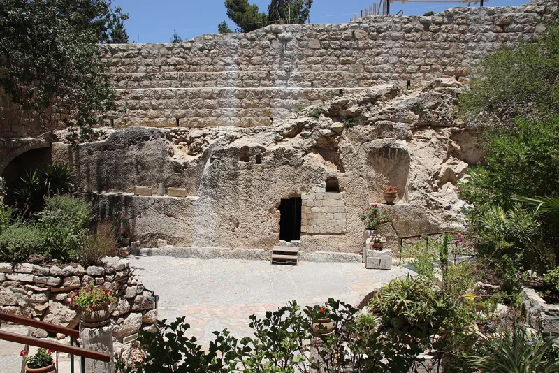
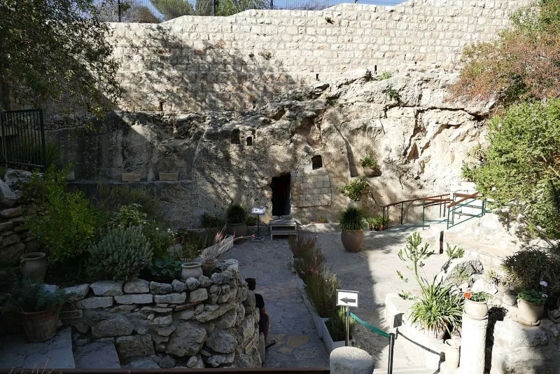

Raised as a spirit, the crucified body disposed of
AdmittedThe Watchtower's own publications admit these facts. You can make this point from their library alone.
What they teach
Watchtower doctrine denies that Jesus rose in the body that was crucified. Russell wrote in 1889 that the body did not decay, and asked whether it was dissolved into gases or is still kept somewhere.
Nobody knows, he said (The Time Is at Hand, p. 129).
The modern teaching is the same in substance. Jesus was raised a spirit creature (The Watchtower, Sept 1, 1953, p.
518). God disposed of the fleshly body in his own way (You Can Live Forever in Paradise on Earth, 1982, p.
144). The appearances were bodies briefly made for the occasion.
What Jesus said would happen
John 2:19-21 has Jesus say "destroy this temple and in three days I will raise it up." John explains he meant the temple of his body. After the resurrection he says: "See my hands and my feet, that it is I myself; touch me and see, for a spirit does not have flesh and bones as you see that I have" (Luke 24:39).
Their answer, at full strength
They cite 1 Peter 3:18: put to death in the flesh, made alive in the spirit. They cite 1 Corinthians 15:45 and 15:50: the last Adam became a life-giving spirit, and flesh and blood cannot inherit God's kingdom.
There is also a ransom argument. Jesus gave up his human life for good, so taking the body back would cancel the payment.
Angels appeared in flesh in the Old Testament, so the appearances have precedent.
Where that runs out
On their account, Jesus proved he was not a spirit while he actually was one. That makes his own demonstration misleading.
The empty tomb also does no work if the body was simply dissolved.
How strong is this argument?
They admit this themselves, from 1889 to now. The debate about 1 Corinthians 15 is real, so present it rather than hide it.
The strongest ground is Luke 24:39 and John 2:19-21.
What to say
"If he was a spirit at that moment, what did Luke 24:39 mean? He offers his hands and feet as proof."



How they answer this — at its strongest
Peter says 'made alive in the spirit,' and the ransom could not be taken back.
Witnesses cite 1 Peter 3:18, 'put to death in the flesh but made alive in the spirit.' They cite 1 Corinthians 15:45 and 15:50, where the last Adam 'became a life-giving spirit' and 'flesh and blood cannot inherit God's kingdom.' They take these as proof that the resurrection was to spirit life.
There is also a ransom logic. Jesus gave up his human life for good, so taking the body back would revoke the payment. And the materialized-body appearances follow an Old Testament pattern, where angels appeared in flesh.
The verdict
They admit it themselves. Luke 24:39 and John 2:19-21 are your strongest ground.
The teaching is openly stated in their own publications, from 1889 to now. So there is no dispute about what they teach.
The biblical counter from John 2:19-21 and Luke 24:39 is strong. And the materialization reading makes Jesus' own appeal to evidence misleading. He offers his flesh and bones as proof that he is not a spirit.
Graded admitted, because the doctrinal fact is conceded. The debate over 1 Corinthians 15 is real, so present it rather than hide it.
Sources
- The Time Is at Hand (Russell, 1889) — full scan
- Watchman Fellowship — The Resurrection as Jesus' Climactic Miracle
- CARM — Watchtower quotes on Jesus